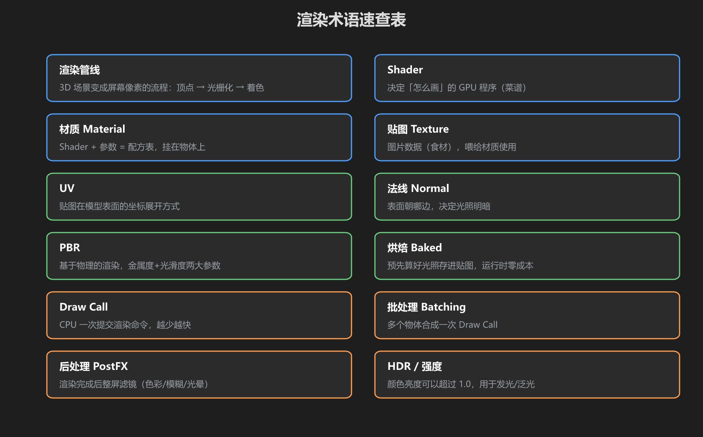
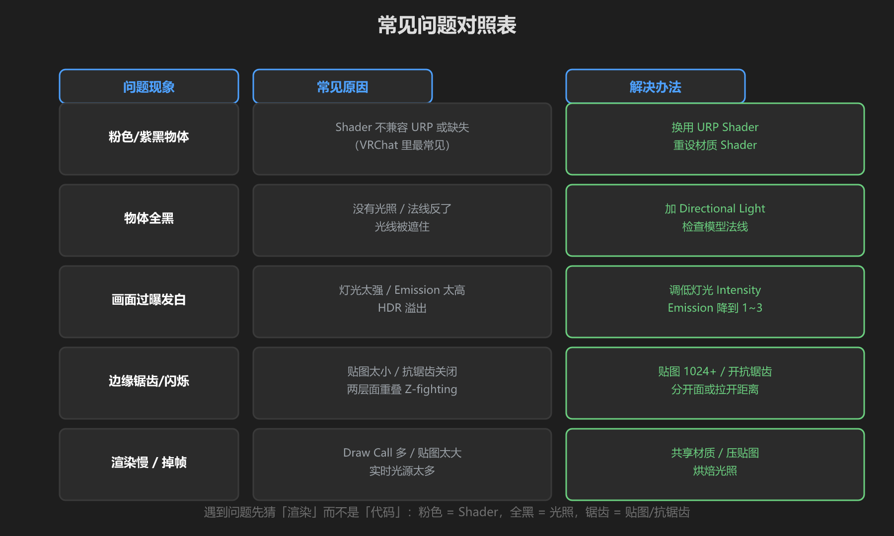
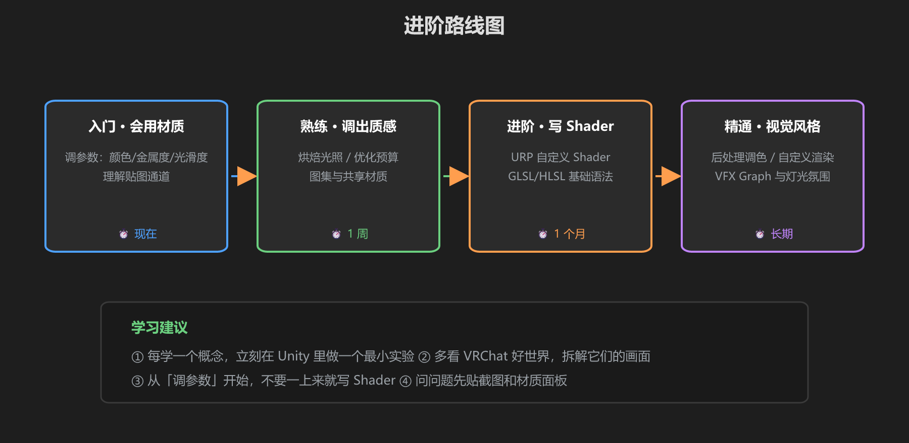

第 6 篇：速查表 & 常见问题
这篇是用来「随时翻」的。做完前五篇后，遇到问题先来这里查。
1. 术语速查表

图：12 个必懂术语，一分钟扫一遍
| 术语 | 一句话解释 |
|---|---|
| 渲染管线 | 3D 场景变成屏幕像素的流程：顶点 → 光栅化 → 着色 |
| Shader | 决定「怎么画」的 GPU 程序（菜谱） |
| 材质 Material | Shader + 参数 = 配方表，挂在物体上 |
| 贴图 Texture | 图片数据（食材），喂给材质使用 |
| UV | 贴图贴在模型表面的坐标展开方式 |
| 法线 Normal | 表面朝哪边，决定光照明暗 |
| PBR | 基于物理的渲染，核心参数是金属度 + 光滑度 |
| 烘焙 Baked | 预先算好光照存进贴图，运行时零成本 |
| Draw Call | CPU 一次提交渲染命令，越少越快 |
| 批处理 Batching | 多个物体合成一次 Draw Call |
| 后处理 PostFX | 渲染完成后整屏滤镜（色彩/泛光/模糊） |
| Emission | 自发光通道，亮度可超 1.0，配合泛光发光 |
2. 常见问题对照表

图：现象 → 原因 → 解法 对照表
| 现象 | 原因 | 解法 |
|---|---|---|
| 粉色/紫黑物体 | Shader 不兼容 URP 或缺失（VRChat 最常见！） | 重设 Shader 为 URP/Lit，重新拖贴图 |
| 物体全黑 | 没有光照 / 法线反了 / 光被遮住 | 加 Directional Light；检查模型法线 |
| 画面过曝发白 | 灯光太强 / Emission 太高 | Intensity 降到 1~2，Emission 降到 1~3 |
| 边缘锯齿/闪烁 | 贴图太小 / 抗锯齿关 / 两面重叠 Z-fighting | 贴图 1024+，开抗锯齿，分开重叠的面 |
| 渲染慢/掉帧 | Draw Call 多 / 贴图大 / 实时光源多 | 共享材质 → 压贴图 → 烘焙光照 |
3. 进阶路线图

图：入门 → 熟练 → 进阶 → 精通的路线和时间参考
| 阶段 | 目标 | 学习内容 |
|---|---|---|
| 入门 | 会调材质 | 本教程 + 把场景所有物体换成 URP/Lit |
| 熟练 | 调出质感 | 烘焙光照、贴图通道（Normal/Metallic）、图集 |
| 进阶 | 写 Shader | URP 自定义 Shader、HLSL 基础、Shader Graph |
| 精通 | 风格化画面 | 后处理调色、VFX Graph、灯光氛围设计 |
4. 学习资源
- Unity 官方文档：URP 手册（Universal Render Pipeline）
- Shader Graph：可视化写 Shader，比手写 HLSL 友好得多
- VRChat Creator Docs：Udon、世界设置、性能限制的权威来源
- 好世界的拆解：去 VRChat 里逛优秀世界，想「它这个玻璃/光效是怎么做的」，回来在 Unity 里复刻
最后的话：渲染是「参数 + 实验」的学问。调一个参数 → 看一眼 → 再调。看完这篇你已经超过大多数只会拖模型的新手了。去把你的世界变好看吧！